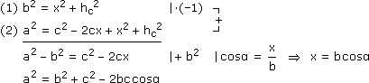

IX. GONIOMETRIE/TRIGONOMETRIE
A. Eigenschaften der Winkelfunktionen
B. Goniometrische Gleichungen
C. Sinus- und Kosinussatz
D. Trigonometrie im allgemeinen Dreieck
 Ergänzungen und Details
Ergänzungen und DetailsDie Kosinusfunktion ist gerade, Sinus und Tangens sind ungerade, d.h. die an der y-Achse bzw. am Ursprung gespiegelte Funktionskurve landet wieder in sich selbst. Rechentechnisch heißt das:

Kosinus und Sinus sind periodisch mit Periode 360°, Tangens mit Periode 180°, d.h. für alle n

 gilt:
gilt:f(x + n·Periode) = f(x)
Die Arkusfunktionen von Kosinus und Sinus decken daher nur eine halbe Persiode ab, die Lösung in der anschließenden Hälfte erhalten wir so:
|
α1 = arccos(.) α2 = 360° – α1 |
α1 = arcsin(.) α2 = 180° – α1 |
2 Summensätze
• cos(α + β) = cosαcosβ – sinαsinβ ("COCO–SISI")
• sin(α + β) = sinαcosβ + cosαsinβ ("SICO+COSI")
Beweis (im ersten Quadranten):
Für den Tangens folgt daraus:
Obige Formeln bleiben richtig, wenn wir überall Additionen und Subtraktionen vertauschen. Und für 2α (= α+α) merken wir uns:
• cos2α = cos2α – sin2α
• sin2α = 2sinαcosα
• tan2α =
2tanα
1 – tan2α
Aufgabe 1: Vereinfache: – 1
2tanα
sin2α
3 Sinusförmige Wechselgrößen
Wir verallgemeinern den elementaren Sinus (als Funktion der Zeit), indem wir die Periode von 2π auf T ändern und dann um t0 verschieben:

In y-Richtung ändern wir die Amplitude von 1 auf r, das Ergebnis heißt dann sinusförmige Wechselgröße:
• y(t) = rsin(ωt+φ) mit Kreisfrequenz ω :=
2π
T
Bem: Mit Hilfe der Summensätze können wir obige Amplituden-Phasen-Form in eine Kosinus-Sinus-Linearkombination umwandeln.
rsin(ωt+φ) = r(sinωtcosφ + cosωtsinφ) = rycosωt + rxsinωt
Aufgabe 2: Die Nabe eines Riesenrads mit 50 m Durchmesser liegt 28 m über dem Boden, die Umlaufzeit liegt bei 210 s. Bestimme, wie viel Meter über dem Boden sich die unten eingezeichnete Gondel nach t Sekunden befindet.

|
r = 25 ω = 2π/T = 0,03 t0 = T/12  φ = –ωt0 = –0,525 φ = –ωt0 = –0,525
|

|
y(t) = 25sin(0,03t–0,525) h(t) = 28+y(t)
|
Ein "aufgeblasenes" Argument einer Winkelfunktion substitutieren wir, dann lösen wir die Gleichung in [0°, 360°[ und berücksichtigen die Perioden.
Aufgabe 3: Wann kann ein Schiff tagsüber in einem Hafen anlegen, wenn der in Meter gemessene Wasserstand nach t Stunden dieses Tages wie folgt berechnet wird und über 8 m liegen muss?
h(t) = 7,4 + 1,5sin(0,507t + 1,2)
h(t) = 7,4 + 1,5sin(0,507t + 1,2)
u = 0,507t + 1,2 mit t
[0; 24[ u [1,2; 13,368[7,4 + 1,5sinu = 8 – 7,4 :1,5
sinu = 0,4 arcsin(.)
u1 = 0,412 t1 = = –1,95
t1 = u – 1,2
0,507
u2 = π – u1 = 2,730 t2 = … = 3,02
t2 = … = 3,02
u3 = u1 + 2π = 6,695 t3 = … = 10,84
t3 = … = 10,84
u4 = u2 + 2π = 9,013 t4 = … = 15,41
t4 = … = 15,41
u5 = u1 + 4π = 12,978 t5 = … = 23,23
t5 = … = 23,23h(0) = 8,8
h(t2)↓8, h(t3)↑8, h(t4)↓8, h(t5)↑8 10:50 bis 15:25Verschiedene Winkelfunktionen reduzieren wir über die Zusammenhänge, die uns bei ihrer Definition im Einheitskreis aufgefallen sind, auf eine.
• cos2α + sin2α = 1
• tanα =
sinα
cosα
Aufgabe 4: Bestimme die Lösungsmenge in [0°, 360°[: 17cosα + 16sinα = 23
17cosα + 16sinα = 23 –16sinα
17cosα = 23 – 16sinα (.)2
289cos2α = 529 – 736sinα + 256sin2α
289(1–sin2α) = 529 – 736sinα + 256sin2α u = sinα
0 = 545u2 – 736u + 240
u1,2 =  0,550,8
0,550,8
736 ± √(–736)2 – 4·545·240
2·545
0,550,8Fall u1: sinα = 0,55
α1 = 33,40° α2 = 180° – α1 = 146,60°
Fall u2: sinα = 0,8 α3 = 53,13° α4 = 180° – α3 = 126,87°
α3 = 53,13° α4 = 180° – α3 = 126,87°
Einsetzprobe L = { 33,40°; 53,13° }
L = { 33,40°; 53,13° }
Aufgabe 5: Bestimme die Lösungsmenge in [0°, 360°[: cosα + = 0
1 – tan2α
1 + tan2α
cosα +
1 – tan2α
1 + tan2α
cosα(cos2α + sin2α) + cos2α – sin2α = 0
cosα + cos2α – (1 – cos2α) = 0 u = cosα
2u2 + u – 1 = 0
u1,2 = 0,5–1
–1 ± √12 – 4·2·(–1)
2·2
0,5–1Fall u1: cosα = 0,5
α1 = 60° α2 = 360° – α1 = 300°
Fall u2: cosα = –1 α3 = 180°
α3 = 180°Im rechtwinkeligen Dreieck setzen wir uns auf den gegebenen/gesuchten Winkel α, unterscheiden die Katheten in die dem Winkel anliegende und gegenüberliegende und erhalten:
Das allgemeine Dreieck können wir immer in rechtwinkelige Dreiecke zerlegen bzw. auf solche ergänzen. Indem wir die obigen Definitionen dort anwenden, stoßen wir auf folgende Sätze, die nur Seiten und Winkel des ursprünglichen Dreiecks enthalten:
2 Sinussatz
Beweis (Δ):
Die trigonometrische Flächenformel (vgl. Betrag des Vektorprodukts) folgt genauso:
3 Kosinussatz

Beweis (Δ):
|  |
Welcher Satz hilft uns im Folgenden weiter?
Sinussatz
Kosinussatz
Sinussatz
Sinussatz
Kosinussatz
Zusammengefasst: Wenn wir 3 Bestimmungstücke haben und es sind zwei Seiten und der eingeschlossene Winkel oder alle drei Seiten, nehmen wir den Kosinussatz, ansonsten den Sinussatz.
Aufgabe 6: Die Scharnierseite einer 90 cm breiten Tür ist 55 cm von der Zimmerecke entfernt, wo die Wände den Winkel α = 100° einschließen. Bis zu welchem Winkel lässt sich die Tür öffnen?
|
[Länge] = cm a sinα b sinβ sinβ = bsinα a β1 = 37° β2 = 180° – β1 = 143°  Öffungswinkel = α + β1 = 137° |
Aufgabe 7: Die unzugänglichen Punkte C und D und die abseits gelegene Standlinie AB = 180 m liegen im ebenen Gelände. Von den Punkten A und B aus werden die unten angegebenen Winkel gemessen. Wie weit sind C und D voneinander entfernt?
α1 = BAC = 41,3° α2 = CAD = 81,3° β1 = DBA = 27,5° β2 = CBD = 83,9°
Hinweis: Mit BAC ist der Winkel zwischen den Schenkeln AB und AC gemeint.
α1 = BAC = 41,3° α2 = CAD = 81,3° β1 = DBA = 27,5° β2 = CBD = 83,9°
Hinweis: Mit BAC ist der Winkel zwischen den Schenkeln AB und AC gemeint.
Aufgabe 8: Vom Ort O aus (780 m Seehöhe) sieht man die Bergspitze A (2310 m) unter dem Höhenwinkel α = 13,8° und die Bergspitze B (1990 m) unter β = 10,8°. Projiziert man beide Sehlinien in die durch O gehende Horizontalebene, dann schließen sie dort den Winkel γ = 62,6° ein. AB = ?